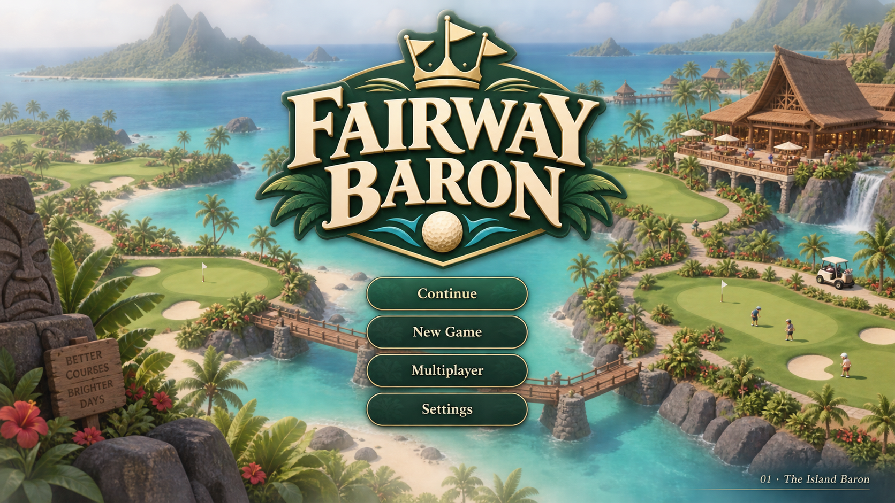
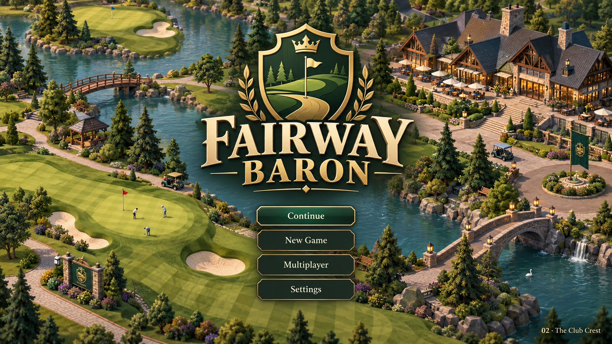
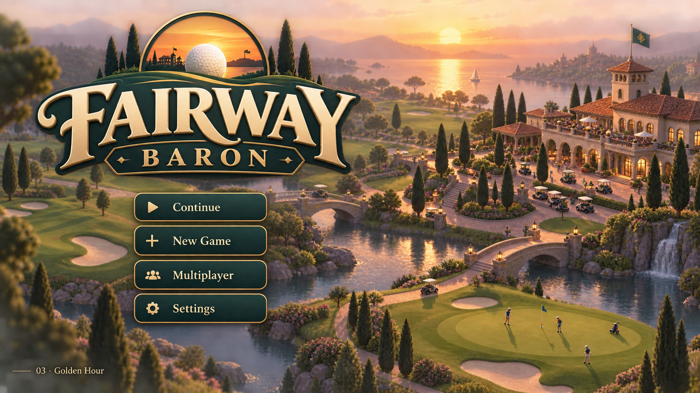
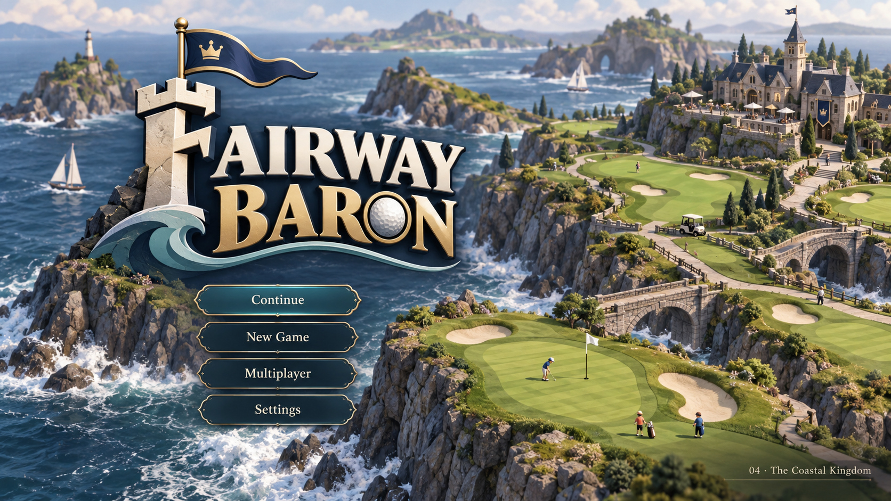
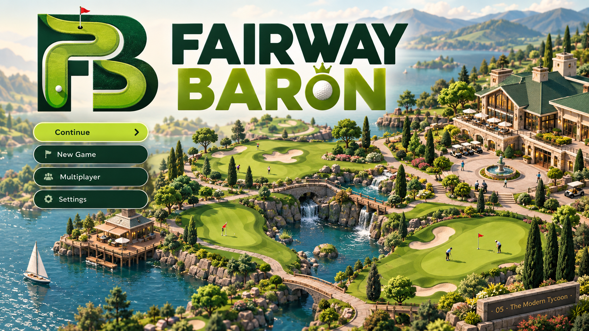
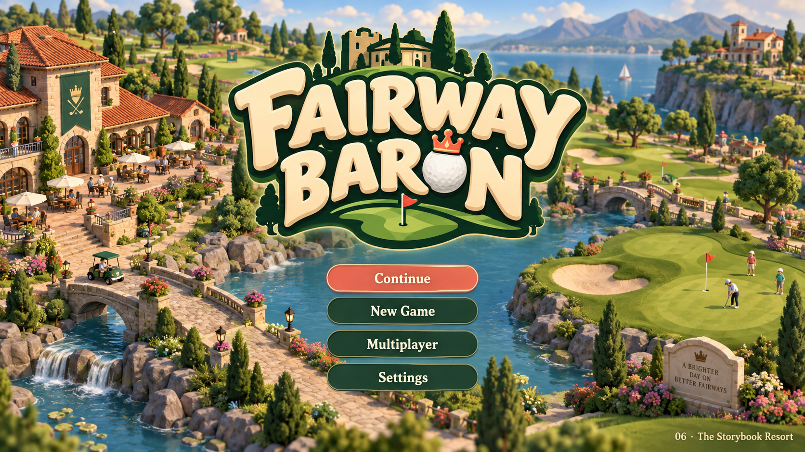
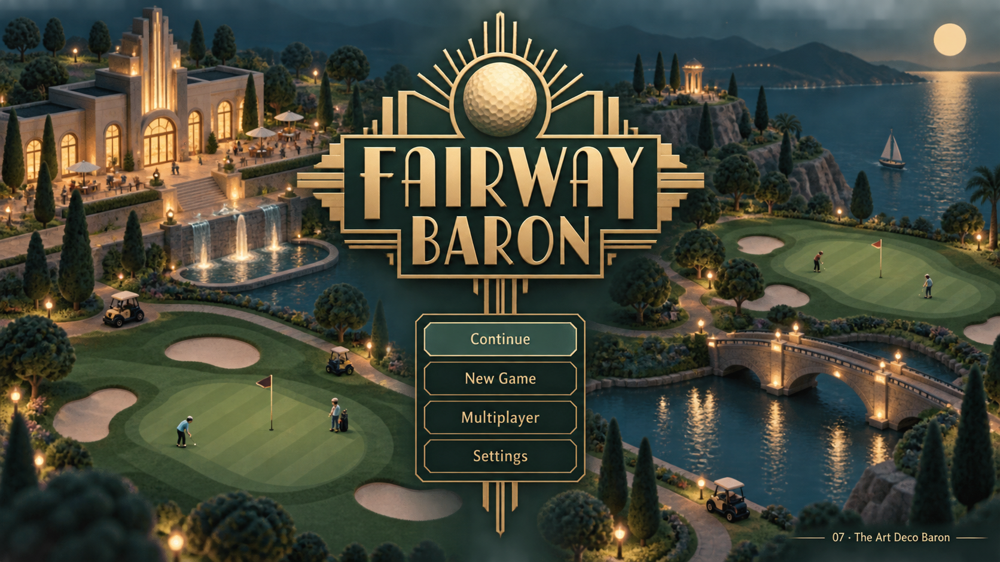
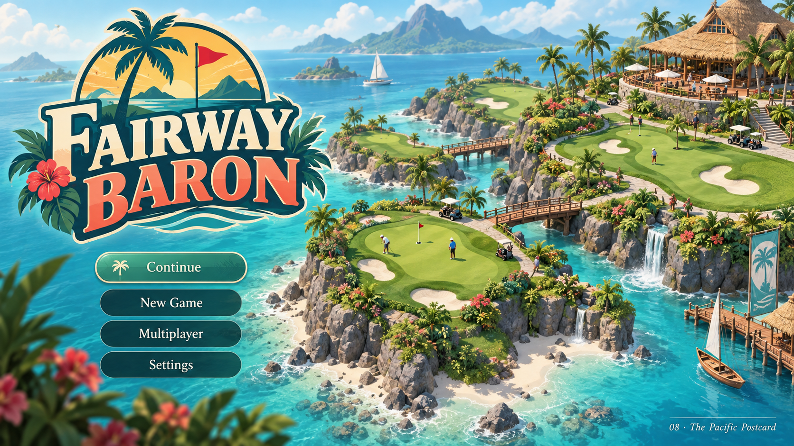
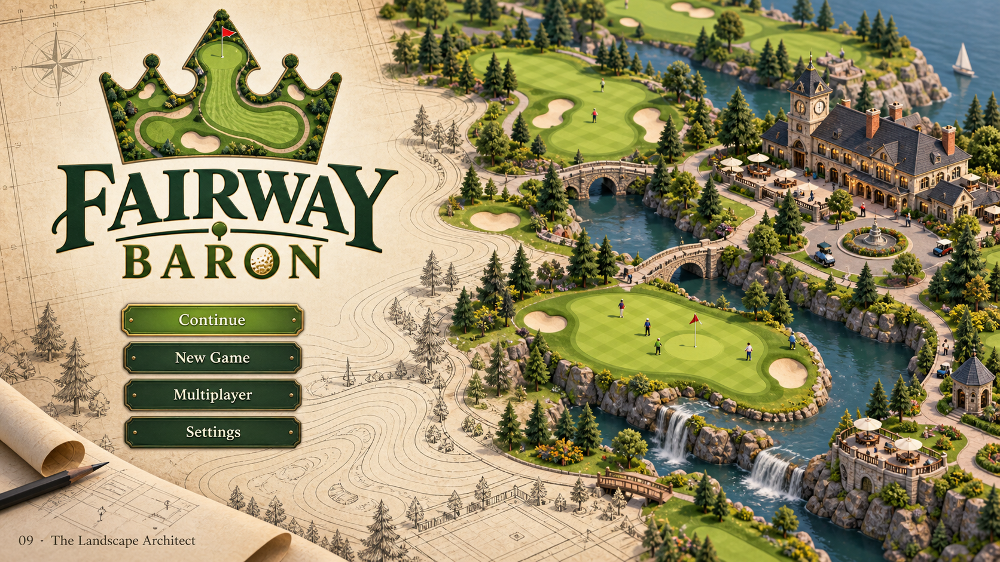
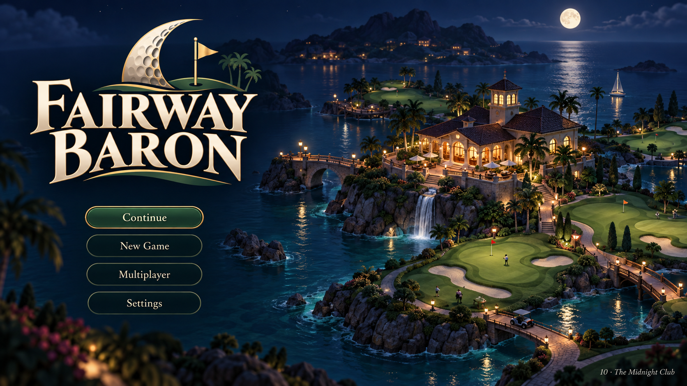

01 · The Island Baron
Lush Tonga-inspired tropical island golf resort, turquoise lagoon, palms and tasteful Polynesian timber clubhouse. Rich emerald, warm ivory and restrained gold. Bold elegant ivory serif FAIRWAY BARON wordmark with a small crown made from three golf flags. Bright inviting premium resort management.

02 · The Club Crest
Classic private golf club reimagined as an elegant modern game. Deep forest green and champagne gold. Beautiful shield crest combining a flag, winding fairway and subtle crown, bold sophisticated serif FAIRWAY BARON. Isometric manicured estate with timber clubhouse, trees and a lake.

03 · Golden Hour
Dramatic warm sunset over a charming stylized isometric golf estate, long soft shadows and peach sky reflected in water. Copper gold, deep teal and cream. Large flowing confident FAIRWAY BARON custom lettering with a golf ball sunset emblem. Cinematic composition, still clearly a management game.

04 · The Coastal Kingdom
Rugged island links, craggy rocks, rolling green golf holes and waves. Cool navy, seafoam and ivory. Strong sculptural FAIRWAY BARON serif logo with a flag flying from a castle-like geometric F monogram. Confident adventurous character, polished illustrated 3D.

05 · The Modern Tycoon
Very clean striking editorial game branding, rich green and electric chartreuse with warm white. Huge stylish geometric FAIRWAY BARON sans-serif lettering, distinctive FB monogram formed from a fairway bend. A meticulous isometric miniature golf resort occupies the lower half. Luxurious modern graphic restraint.

06 · The Storybook Resort
Warm playful sophisticated management-game identity. Rich saturated greens, coral-red flags and cream. Chunky beautifully drawn FAIRWAY BARON display lettering, golf ball with a tiny playful crown icon. Charming detailed isometric golf village with golfers and lush landscape. Nostalgic personality with modern 3D polish, not childish.

07 · The Art Deco Baron
1920s-inspired art deco golf resort elegance, dark midnight teal, antique gold and pale mint. Symmetrical geometric FAIRWAY BARON logo with sunburst golf ball emblem and subtle stepped linework. Stylized isometric estate under evening lights, luxurious opening-screen composition.

08 · The Pacific Postcard
Retro travel-poster-inspired tropical golf island escape. Turquoise, sun yellow, coral and jade. Bold handsome FAIRWAY BARON vintage travel lettering with a palm-and-golf-flag emblem. Richly illustrated raised isometric island course, white sand, palms and thatched clubhouse. Stylish collectible vacation poster brought to game UI.

09 · The Landscape Architect
Beautiful architectural-diorama approach. Warm parchment, dark ink green and grassy lime. Refined FAIRWAY BARON logo with a contour-line fairway shaped into a crown emblem. A finished lush isometric golf course gradually transitions at an edge into elegant blueprint contour lines. Creative course-building fantasy, tactile premium design.

10 · The Midnight Club
Bold moody premium nighttime resort splash. Ink navy, emerald and glowing warm brass. Iconic FAIRWAY BARON high-contrast serif wordmark with crescent golf ball and flag emblem. Isometric island clubhouse warmly lit, moonlit fairways, subtle palms and glowing lagoon reflections. Highly legible, intimate and cinematic, no neon cyberpunk.